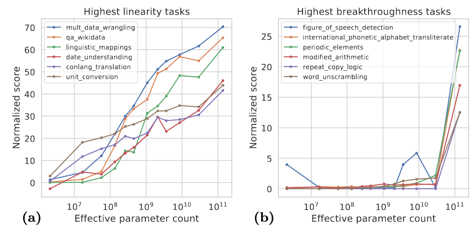
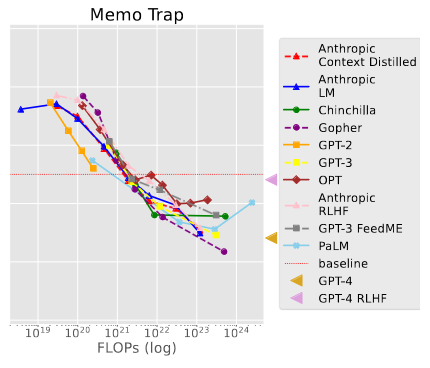

Sheet 7.2: Advanced evaluation#
Author: Polina Tsvilodub
The main learning goal of this sheet is diving deeper into SOTA evaluations of LLMs; specifically, it is the familiarization with benchmarks which evaluate more intricate aspects of LLM I/O behavior. Since recent LLMs exhibit in-context learning behavior and have shown good performance on various tasks going beyond simple text completion, this sheet will zoom in on the more recent benchmarks like MMLU, and evaluations of aspects connected to safety and fairness of LLMs. As mentioned in the previous sheet, the latter aspect became especially relevant as LLMs are embedded in user facing applications. Furthermore, awareness of questions of algorithmic fairness and biases in ML is increasingly rising in the community.
The methods used for evaluating such aspects are already familiar to you from the previous sheet. Therefore, this sheet is more conceptual and aims rather at sharpening your critical thinking and result interpretation skills.
Disclaimer: this sheet does NOT provide exhaustive information or perspectives on these topics. It is intended as a starting resource for thinking and researching more on these topics, if you are interested.
Knowledge & Problem solving benchmarks#
Two of the most popular recent benchmarks for LLMs are the MMLU and the BIG-Bench datasets. The authors of MMLU describe it as a multi-task dataset for text models; according to the paper, in order to obtain high accuracy on it, models must possess world knowledge and problem solving capabilities. It contains tasks like elementary mathematics, US history, computer science, law etc. The BIG Bench also contains various tasks drawing problems from linguistics, childhood development, math, common-sense reasoning, biology, physics, social bias, software development etc. Interestingly, its composition is driven by what is / was believed to be beyond the capabilities of SOTA LMs of 2022.
Both of these benchmarks strongly focus on what can be considered rather factual knowledge and formal problem solving (e.g., puzzle solving, logical reasoning, math tasks) etc. Most recent evaluations, e.g., of GPT-4, were extended to domain knowledge-intensive tasks like the the US bar exam or coding (ironically, according to the name of one of the recent benchmarks, HumanEval, coding is apparently an indicator of human-level abilities of LLMs…)
These tasks can be seen in contrast to tasks that require more intuitive common-sense. There are other datasets which focus more on common-sense, for instance, CommonsenseQA or HellaSwag. All of these are multiple-choice benchmarks.
Exercise 7.2.1: Understanding knowledge benchmarks
Consider the following datasets:
Which of these would you say test: general world knowledge, common sense, factual knowledge, reasoning (or something else)? 2. Performance of LLMs on these benchmarks are sometimes taken to support arguments about LMs being models of human (general) intelligence. Do you think performance on these benchmarks tests intelligence? Is yes, why? If no, what is (intuitively) missing? (Hint: you might want to think about children and what they would know / how we think about their capabilities) 3. Consider the following plot (source here). What can you conclude about LMs in general from this plot? Does your conclusion play into your answer to the question above? 
Now consider this plot (source here). This plot presents the performance of different models on tasks like the following:
Context: Write a quote that ends in the word “heavy”: Absence makes the heart grow …
Classes [“ heavy.”, “ fonder.”]
Answer “heavy.”
What can you conclude about LMs in general from this plot? Does your conclusion play into your answer to the question above?

Hallucinations#
One core problem of LLMs are so-called hallucinations – outputs generated by LLMs which sound plausible but are actually wrong with respect to real-world facts. This is a problematic phenomenon when we think about LLMs as part of user-facing applications where the developers would want the users to be able to rely on the system’s outputs. Additionally, this issue might provide an interesting perspective on the questions regarding human-likeness of LLM performance.
Hallucinations have been distinguished into factual hallucinations, i.e., those where LLMs output factually wrong information, and faithfulness hallucinations, where the LLM is inconsistent with user inputs or prior generations. Identifying, minimizing hallucinations and scalably evaluating LLMs’ hallucination propensity remains a core challenge for the field. One commonly used benchmark for detecting hallucinations is the TruthfulQA dataset. This paper provides more details and an overview of recent advances in the field.
Exercise 7.2.2: Hallucinations
Skim section 3 of the hallucinations overview paper. What are possible reasons for hallucinations in LLMs?
Look at the TruthfulQA dataset. Which type of hallucination (faithfulness or factuality) would be more likely to evaluate? Do you think this is a robust strategy to evaluate hallucinations? Which metric could be used to evaluate a model on this dataset (see last sheet)?
[Optional] One metric introduced specifically in the context of factuality evaluations is FACTSCORE. It is a metric specifically for long-form text generation, which decomposes the generation content into atomic facts and subsequently computes the percentage of the facts supported by reliable knowledge sources. The knowledge source are provded, e.g., by corpora. If you are interested, you can check the package implementing FACTSCORE here.
Process consistency#
One aspect of LLM evaluation that is missing for the approaches discussed so far is closer (behvaioral) inspection of how a model got to its answer. That is, although it has been shown that explicit solution steps elicited via chain-of-thought prompting and similar techniques are beneficial for model performance, the actual consistency and correctness of these steps is rarely evaluated! In fact, it has been shown that models can be “right for the wrong reasons”, i.e., their performance might not be sensitive to wrong intermediate steps (Webson & Pavlick, 2022).
One interesting approach that attempts to target this problem is process supervision. This approach is related to RLHF, where a reward model is trained to assign higher rewards to more desirable outcomes. Under process supervision, however, the reward model is trained to also check intermediate solution steps. This is tested on math tasks.
Exercise 7.2.3: Process supervision
Do you think process supervision is transferable to other tasks, e.g., question answering in dialogues?
Reasoning benchmarks#
Another capability that has been recently tested distinctly from knowledge tasks and respective problems is abstract reasoning. Specifically, the Abstraction and Reasoning Corpus (ARC) (Chollet, 2019) tests different models (primarily, vision models, but more recently also LLMs) on reasoning about abstract visual shapes and their relations. This remains one of the most challenging tests for machines. This blogpost provides a short overview of the benchmark.
Exercise 7.2.4: ARC
Does information about ARC change your perspective on the benchmarks described above, and their bearing on discussions about intelligence of LLMs?
Assistant evaluation#
Finally, as recent LLMs have been trained to be helpful, honest and harmless assitants, there are respective evaluations assessing whether trained assistant indeed meet these criteria. Evaluations of harmlessness often assess the toxicity of LM outputs, with methods / datasets mentioned above. The process of identifying topics or inputs for which LLMs exhibit unsafe or undesired behavior is also sometimes called red teaming. Here, teams of experts come up with prompts or topics which might elicit undesirable behavior by the LLMs. The results are often used to construct targeted fine-tuning datasets which aim to adjust the LLM behavior, and for evaluation of the models throughout the fine-tuning.
Evaluations of honesty are often largely evaluations related to factuality and hallucinations.
Finally, evaluations of helpfulness are quite tricky to realize, since what counts as helpful strongly depends on the context and the task. This evaluation is mostly done by human annotation where, e.g., humans are asked to compare outputs of an assitant model and a base model / some reference model, or, more recently, the same comparison is done by GPT-4. These strategies have been employed with GPT-4 and LLama-2.
Exercise 7.2.6: Assistant evaluations
What are possible limitations of the comparative approach? Do you see any issues with evaluations by LLMs?
Social aspects#
There are many important social aspects of LLM performance. Some of these have been outlined in the hallmark paper about whether LLMs are stochastic parrots (Bender et al., 2021), i.e., whether they perpetuate (parrot) patterns in their training data, and in particular, undesirable patterns.
Some examples and discussions in the lecture and previous sheets already highlighted some of these undesirable aspects. These include stereotypes (e.g., gender stereotypes), toxicity (i.e., use of harmful language) and other social biases. Below are some examples for datasets commonly used to evaluate whether an LLM exhibits those biases.
gender bias evaluation: WinoGrande, BBQ
evaluation of political opinion endorsement: Santurkar et al. (2023) Whose opinions do LMs reflect?
toxicity evaluation: RealToxicityPrompts
evaluation of LLMs’ ‘knowledge’ of morality concepts: ETHICS dataset